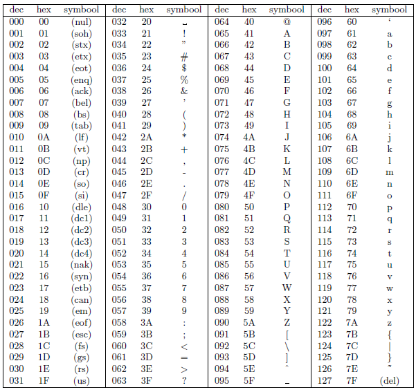

Het binair stelsel is een tweetallig stelsel is een stelsel dat bestaat uit nullen en eenen die ook bits worden genoemd. Deze rijen aan bits vormen de basis van het opslaan van informatie en kunnen teksten schrijven op je computer. we gebruiken dit stelsel, omdat computer werken met 2 toestanden, aan(1) en uit(0). dit maakt het symsteem eenvoudig en efficiënt, omdat complexe dingen kunnen worden opgebouwd uit deze simpele binaire logica.
Zoals eerder verteld worden er in het binair stelsel maar gebruik gemaakt van 2 getallen, 0 en 1. In tegenstelling tot ons eigen decimale stelsel dat tien cijfers heeft, is het binair stelsel op de kracht van 2. Elk positie in het binair stelsel is dus een macht van 2. In het binair stelsel wordt altijd geteld vanaf rechts en is alles in de macht van 2. Bij het tellen is het dus 1,2,4,8,16,32 etc. Een code bestaat uit nullen en eenen. Alleen de eenen worden wat meegedaan. Hieronder zijn een paar voorbeelden om de telling van het stelsel wat duidelijker te maken.
Voorbeelden van het binaire stelsel: 00000010 = 2, want het eerste getal rechts is een nul en staat uit. Het tweede getal staat wel aan en is dus 2¹. nog een voorbeeld: 00001011 = 11. De 1ste, 3de en 4de getallen staat aan en doen dus mee bij het tellen. Als we het dan gaan optellen krijg je: 2⁰ + 2¹ + 2³ = 11. Onderaan staat een leuk spelleteje om te oefenen met het binaire stelsel. Nog steeds onduidelijk? bekijk dan deze uitleg video over rekenen met het binair stelsel.
De kleinste eenheid uit het binaire stelsel is een bit. Dit is de afkorting van binary digit. Een bit kan de waarde 0 of 1 aannemen. Dit ziet er uit als een beperkt aantal mogelijkheden maar is de basis voor alle digitale informatica. Een byte is een rij van acht opeenvolgende bits. er zijn dan 2⁸ = 256 mogelijkheden. deze bytes zijn van belang om informatie een betekenis te geven. een toepassing van de bytes is bijvoorbeeld het ASCII-codering waarin bijvoorbeeld een letter aan en bepaalde byte wordt gekoppeld.
De ASCII-tabel is een standaard die gebruikt wordt om tekens, zoals letter, cijfers en symbolen om te zetten in binaire waarden die computers kunnen begrijpen. een ASCII waarde bestaat uit 7 bits die samen 128 mogeijke combinaties kunnen vormen. Elke combinatie heeft een bepaald karakter. De eerste waarden (0-31) zijn voor controle karakters, zoals backspace. de waarde 32-127 zijn er voor letters, cijfers en symbolen. Hieronder staat een afbeelding met alle waarden en bijberhorende tekens.
